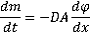
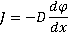
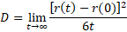
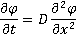

Diffusion, particles of a soluble material spread out
Diffusion is the net movement of particles from a region of high chemical potential to low chemical potential.
"...the irregular movement of the particles produced by the thermal molecular movement"
Albert Einstein, 1905
Diffusion b is the net movement of particles (for example, molecules) from a region of high chemical potential (for example, high concentration) to a region of low chemical potential (for example, low concentration). It is driven by the random thermal movements and reduced by the fluid's drag, see above right. Such diffusion also involves the movement of water in the opposite direction. The movement is due to the macroscopic outcome of random Brownian motion. Eventually, it will result in similar concentrations throughout the solution (see the right-hand vessel on the above right).
The diffusive flux (J, the amount of substance moving through a unit area A per unit time t, mol ˣ m−2 ˣ s−1, also called the flux density) is governed by Fick's first law (Molecules on average will tend to diffuse from regions of higher concentration to regions of lower concentration): c


where D is the diffusivity (m2 ˣ s−1 ), dφ is the change in concentration (ideally, mol ˣ m−3), and dx is the change in position (m). The diffusion direction is from higher concentration to lower concentration, such that dφ/dx is always negative, and the diffusive flux is always positive in the diffusion direction. Thus, the particle flux is proportional to the concentration gradient. As Fick states,"According to this law, the transfer of salt and water occurring in a unit of time, between two elements of space filled with differently concentrated solutions of the same salt, must be, caeteris paribus, (other things being equal) directly proportional to the difference of concentration, and inversely proportional to the distance of the elements from one another". c
Einstein defined the diffusivity as

where r(t) and r(0) are the distances, in 3-dimensional space, to the diffusing particle at time t and t = 0, respectively.
In a diffusion process, the concentration of a substance in the region of higher concentration gradually decreases, and the concentration of the substance in the region of lower concentration gradually increases. With time, the concentrations gradients dissipate within the bulk. Diffusion increases entropy (randomness), leading to a lower energy state. Eventually, equilibrium is established with a uniform distribution throughout. Fick's second law describes the concentration (φ) change with time, which can be derived from Fick's first law and the mass conservation,

The Stokes-Einstein equation describes the diffusivity (D) for translational diffusion [806], a

where KB is the Boltzmann constant (J ˣ K−1; kg ˣ m2 ˣ s−2 ˣ K−1), T is the temperature (K), η is the dynamic viscosity (Pa ˣ s; kg ˣ m−1 ˣ s−1), r is the averaged particle radius (equivalent radius, m), R is the gas constant (J ˣ mol−1 ˣ K−1; kg ˣ m2 ˣ s−2 ˣ K−1 ˣ mol−1), and N is the Avogadro constant (mol−1). Surprisingly, the Avogadro constant may be estimated from this simple equation. The diffusivity only depends on the temperature, the viscosity, and the particle size. The averaged particle radius depends on the shape of the particle and its tightly bound water. The 6πηr term comes from Stokes law for the drag (friction coefficient) of a slow-moving sphere with radius R having a velocity V due to a force F:
F = drag ˣ V
where drag = 6πηr (kg ˣ s−1) ≡ friction on a sphere of radius r, F is the force (N, kg ˣ m ˣ s−2), and V is the particle velocity (m ˣ s−1 ). The drag term includes both the fluid-particle friction (viscous shear stress, 4πηr) and the creation of a pressure difference in the fluid each side of the particle in the direction of flow (2πηr). This simple description of the drag is complicated in liquid water due to its molecular interaction effects [3618].
Example approximate diffusivities in aqueous solution
| Molecule | Molecular weight |
Temperature, K |
Diffusivity, m2 ˣ s−1 |
| H2O | 18 | 298 | 2 ˣ 10−9 |
| Urea | 60 | 293 | 1 ˣ 10−9 |
| Sucrose | 342 | 293 | 5 ˣ 10−10 |
| Bovine serum albumin | 67,500 | 298 | 7 ˣ 10−11 |
| γ-Globulin, human | 153,100 | 293 | 4 ˣ 10−11 |
| Soybean protein | 361,800 | 293 | 3 ˣ 10−11 |
| Ribosome | 4,500,000 | 298 | 4 ˣ 10−14 |
The diffusion of individual particles (e.g., molecules) relative to their start position is described on the Brownian motion page.
The slow diffusion within supercooled water has been described by a cage-effect where molecules are trapped within transient hydrogen-bonded cages before 'escaping' by jumping into a new environment, breaking several hydrogen bonds at once [3624].
The diffusion of monatomic and polyatomic ions in aqueous solutions has been reviewed [3778]. The diffusion of polyatomic ions is different from that of monatomic ions due to the rotational self-motion of the former that enhances diffusion in specific cases because of symmetry.
'Diffusion' should not be confused with 'advection' or 'convection'. Advection is the movement due to the velocity of the fluid. Convection applies to the movement of a fluid due, for example, to thermal gradients. Convection is the normal cause of spreading a perfume within a room and spreading of dye within a solution, unless great care is taken to avoid thermal currents.
[Back to Top  ]
]
a It has been proposed that this equation should also be associated with the Australian, William Sutherland, who published before Einstein. W. Sutherland, A dynamical theory for non-electrolytes and the molecular mass of albumin, Philosophical Magazine, 6 (1905) 781-785.
The Stokes-Einstein equation and its commonly used variants together with their reported breakdown, or not, in supercooled water have been discussed [4212]. However, the Stokes-Einstein relation is preserved for the diffusion of probes in supercooled water at temperatures greater than 260 K with probe sizes down to one nanometer [4334]. [Back]
b The word 'diffusion' is derived from the Latin word 'diffundere' , meaning to 'spread out'. [Back]
c A. Fick, Ueber diffusion, Annalen der Physik, 170 (1855) 59-86; A. Fick, (1855). V. On liquid diffusion. The London, Edinburgh, and Dublin Philosophical Magazine and Journal of Science, 10 (1855) 30-39.[Back]
Home | Site Index | Water activity | Brownian motion | Osmotic pressure | LSBU | Top
This page was established in 2006 and last updated by Martin Chaplin on 14 November, 2021